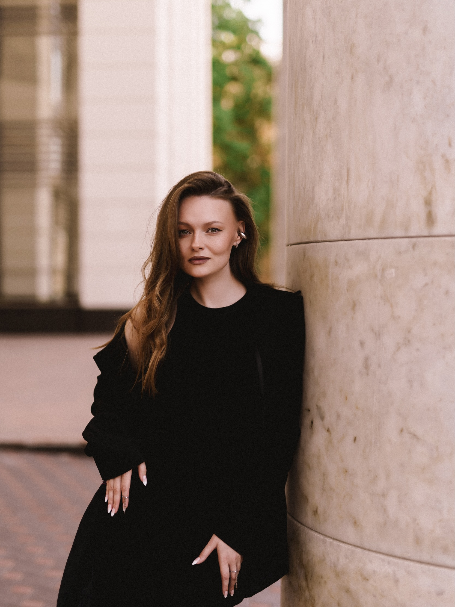

Услышите, что в голосе уже работает
Я помогу отличить свободное звучание от лишнего напряжения
— без расплывчатой оценки «хорошо или плохо».
Я помогаю взрослым перестать стесняться своего звучания, разобрать любимую песню
или подготовиться к выступлению.

Выберите цель, свой опыт и удобный формат. В конце получите готовое сообщение — останется отправить его мне в Telegram.
Не набор упражнений «на будущее», а один слышимый результат и понимание, как повторить его в песне.
Я помогу отличить свободное звучание от лишнего напряжения
— без расплывчатой оценки «хорошо или плохо».
Подберём работу с выдохом, координацией и артикуляцией
под тот фрагмент песни, который нужно изменить сейчас.
Закрепите изменение прямо в песне и поймёте, на что опираться,
когда будете петь без преподавателя.
Можно заниматься для удовольствия, записать песню
или выйти к слушателям. Сцена — возможность,
а не обязательная часть обучения.
Петь любимые песни свободнее
и получать удовольствие от своего голоса.
Разобрать композицию и подготовить её к записи, когда будете готовы.
Подготовить песню и попробовать сцену на ученическом концерте.
У вас может появиться возможность подготовиться к ученическому концерту с живыми музыкантами. Я провожу такие концерты дважды в год; условия участия обсудим отдельно.
Среди учеников есть те, кто пришёл без опыта, и те, кому хотелось развить уже поставленный голос или подготовить сольное выступление.
Она пришла с хорошей вокальной базой и хотела выйти на новый уровень.
Работа с деталями помогла добавить голосу новые краски.
На занятиях всегда весело и душевно, узнаю много нового о вокале — и работа идёт продуктивноИз опубликованного отзыва ученицы
Нажмите на любой скриншот, чтобы прочитать его полностью.
Напишите, хотите ли вы начать петь, подготовить запись или выступление.
Я расскажу об актуальной стоимости, длительности и свободном времени.